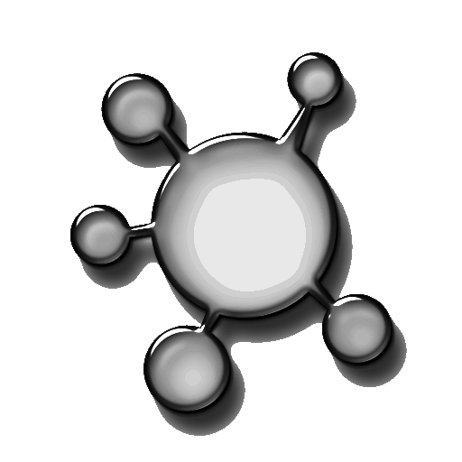

Researchers' Gateway |
|
|
|

The aim of the AEROMAP Project is to develop an algorithm based on neural networks to produce aerosol inversion data from satellite inputs. By combining the reliability of CIMEL-derived inversion data with the full-Earth viewing capacity of satellite remote sensors, AEROMAP hopes to achieve a global real-time monitor of aerosol microphysical and optical properties. DATA SOURCES This endeavour is made possible thanks to the hard work of those colleagues at the hundreds of sites and mission operations worldwide who make quality assured data available to the research community. Below is a list of the main data sources used by AEROMAP:
AEROSOL SCIENCE TOOLS Researchers in the aerosol science community have developed suites of advanced tools to support global studies of aerosol transport. Below is a list of the main aerosol science tools relevant to AEROMAP:
COSMO-ART[Vogel et al 2009] is a numerical regional model for aerosols and reactive trace gases developed by the 'Aerosols, Trace Gases and Climate Processes' Group of the Institute for Troposphere Research, Karlsruhe Institute of Technology (KIT), Germany. The model is online-coupled to the COSMO regional numerical weather prediction and climate model [Baldauf et al., 2011] of the German Weather Service (DWD). The online coupling of meteorology and chemistry, allows for the assessment of their interaction (radiative and CCN impact of aerosols). Bibliography on COSMO-ART can be found here. COSMO-ART is available upon request from Dr. Bernhard Vogel (KIT, Germany). MATLAB CODE AEROMAP is almost enclusively coded using object-oriented programming scripts of MATLAB R2011b. AEROMAP has developed hundreds of functions and subroutines to perform the necessary calculations. On completion of the project, and having undergone thorough alpha- and beta-testing the AEROMAP code will be made available as open source code protected by a Creative Commons GPU license. The aerosol community may benefit from the following scripts created during Phase A of AEROMAP:
AEROMAP is very grateful to other MATLAB programmers who have made their scripts available open source at the MATLAB File Exchange. The plots produced by AEROMAP owe a large part of their cosmetic appearance to the work of these colleagues. Of the plug-ins used by AEROMAP, we wish to acknowledge the following authors: KEY PUBLICATIONS AEROMAP builds on a large body of knowledge. Some of the key works that have provided the motivation for this project as well as the theoretical advances that underpin our current understanding of atmospheric aerosols as well as the empirical techniques used to deduce their optical and microphysical characteristics are listed below:
|
||